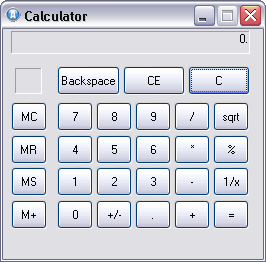
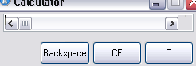
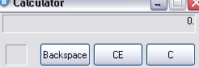

In this tutorial we will try to guide him to create a basic calculator, just
as that of MS-Windows. Using the GUI's AutoIt
features.
It is assumed that you are already familiar with creating and running AutoIt
scripts as shown in the
GUI MsgBox tutorial.
Creation of the GUI dialog - Parte I (Design)
In this part we will begin with the creation of GUI dialog. It's good to have
the idea of the design based on the utility of our program.
That is to say, how many and that type of controls will need. In this case we
will use the same design that Windows Calc.
In the Fig. 1, we can see how our calculator will be finished in this part.
Fig. 1
To begin the creation of our dialog, we will begin including some libraries which declare constants we use in our dialog box. These constants contain numeric values of styles and parameters that define the appearance of each control, as well as you value for events and states. (Usually, "GUIConstantsEx.au3" already comes included and it resides in the AutoIt's folder installer.). Later on we will see how to apply them, for the time being we will make the inclusion of this library writing in our script the following lines:
#include <GUIConstantsEx.au3>
#include <StaticConstants.au3>
#include <EditConstants.au3>
#include <WindowsConstants.au3>
GUICreate ("Calculator", 260, 230)
$CTRL_btn1 = GUICtrlCreateButton (" 1", 54, 138, 36, 29)
As I mentioned before, this makes that the code to be clearer.
; Digit's buttons
$CTRL_btn0 = GUICtrlCreateButton("0", 54, 171, 36, 29)
$CTRL_btn1 = GUICtrlCreateButton("1", 54, 138, 36, 29)
$CTRL_btn2 = GUICtrlCreateButton("2", 93, 138, 36, 29)
$CTRL_btn3 = GUICtrlCreateButton("3", 132, 138, 36, 29)
$CTRL_btn4 = GUICtrlCreateButton("4", 54, 106, 36, 29)
$CTRL_btn5 = GUICtrlCreateButton("5", 93, 106, 36, 29)
$CTRL_btn6 = GUICtrlCreateButton("6", 132, 106, 36, 29)
$CTRL_btn7 = GUICtrlCreateButton("7", 54, 73, 36, 29)
$CTRL_btn8 = GUICtrlCreateButton("8", 93, 73, 36, 29)
$CTRL_btn9 = GUICtrlCreateButton("9", 132, 73, 36, 29)
$CTRL_btnPeriod = GUICtrlCreateButton(".", 132, 171, 36, 29)
; Memory's buttons
$CTRL_btnMClear = GUICtrlCreateButton("MC", 8, 73, 36, 29)
$CTRL_btnMRestore = GUICtrlCreateButton("MR", 8, 106, 36, 29)
$CTRL_btnMStore = GUICtrlCreateButton("MS", 8, 138, 36, 29)
$CTRL_btnMAdd = GUICtrlCreateButton("M+", 8, 171, 36, 29)
; Operators
$CTRL_btnChangeSign = GUICtrlCreateButton("+/-", 93, 171, 36, 29)
$CTRL_btnDivision = GUICtrlCreateButton("/", 171, 73, 36, 29)
$CTRL_btnMultiplication = GUICtrlCreateButton("*", 171, 106, 36, 29)
$CTRL_btnSubtract = GUICtrlCreateButton("-", 171, 138, 36, 29)
$CTRL_btnAdd = GUICtrlCreateButton("+", 171, 171, 36, 29)
$CTRL_btnAnswer = GUICtrlCreateButton("=", 210, 171, 36, 29)
$CTRL_btnInverse = GUICtrlCreateButton("1/x", 210, 138, 36, 29)
$CTRL_btnSqrt = GUICtrlCreateButton("sqrt", 210, 73, 36, 29)
$CTRL_btnPercentage = GUICtrlCreateButton("%", 210, 106, 36, 29)
$CTRL_btnBackspace = GUICtrlCreateButton("Backspace", 54, 37, 63, 29)
$CTRL_btnClearE = GUICtrlCreateButton("CE", 120, 37, 62, 29)
$CTRL_btnClear = GUICtrlCreateButton("C", 185, 37, 62, 29)
$CTRL_LblMemory = GUICtrlCreateLabel("", 12, 39, 27, 26)
$CTRL_EdtScreen = GUICtrlCreateEdit("0.", 8, 2, 239, 23)
GUISetState()
Do
$msg = GUIGetMsg()
Until $msg = $GUI_EVENT_CLOSE
Fig. 2 
For this part, we only need to modidy two lines of our code.
First
modification: In the first addition, we will add in the line of the variable
$CTRL_EdtScreen,
a definition for the control(Edit) that is of reading ($ES_READONLY)
and that it is justified to the derecha($ES_RIGHT),
for we join these two variables with the function
BitOR like it is presented in the line
of code below. We will also add
$WS_EX_STATICEDGE
to the parameter of
extended style (exStyle) to give the sunken appearance to the border. For
more
reference of the styles table for EDIT control,
click here. (for a detailed explanation of each style).
$CTRL_EdtScreen = GUICtrlCreateEdit (" 0.", 8, 2, 239, 23, BitOR($ES_READONLY, $ES_RIGHT), $WS_EX_STATICEDGE )
Second modification: The second addition we will add to the line of the variable $CTRL_LblMemory, that it contains a control type LABEL in which will show us the state of storage in memory that we will see in the second part. We will define that this control (Label) will have a sunken($SS_SUNKEN) like it is presented in the line of the code. For reference of styles table for LABEL control, click here.$CTRL_LblMemory = GUICtrlCreateLabel ("", 12, 39, 27, 26, $SS_SUNKEN)
After making these changes try to execute the script. The changes affects the appearance shown in the Fig. 3, now our calculator it looks as the Fig. 1, shown at the beginning. You can also look at the completed script for reference.
Fig. 3 
As an exercise for the reader, try adding $BS_FLAT to style parameter in some button, you will look a flat style in the apperance.